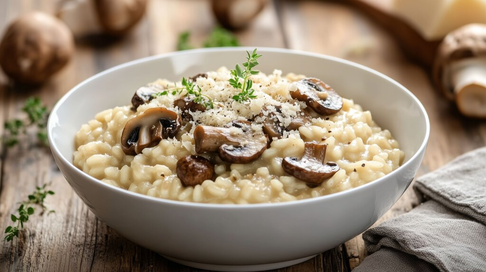

Risotto
Home

Description
Risotto is an Italian rice dish cooked with broth and wine until the rice reaches a creamy consistency.
Ingredients
- 3 shallots
- 1 clove of garlic
- 9 dl of mushroom broth
- Olive oil
- 3 dl of carnaroli or arborio
- 2 dl of white wine
- 250 g of mushroom (portobello or chanterelle)
- 3 tbs of butter
- 2 dl of parmesan, shredded
- salt, pepper
Steps
- Peel and finely chop the shallots and garlic.
- Boil the broth and keep it warm.
- Lightly fry the shallots and garlic in olive oil.
- Add the rice fry until gleaming.
- Add the wine and let it boil.
- Add 3-4 dl of broth to the rice and simmer whilst stirring.
- Add 1 dl of broth at a time as the rice absorbs the broth.
- The risotto is ready after about 15-20 min. Taste a few corn rice after consistency.
- Fry the mushroom in butter and season with salt and pepper.
- Add the mushroom to the rice.
- Add 2 dl of parmesan.
- the risotto should be creamy. Add more broth and simmer as necessary.
- Season with salt and pepper.
- Serve on pre-heated plates!